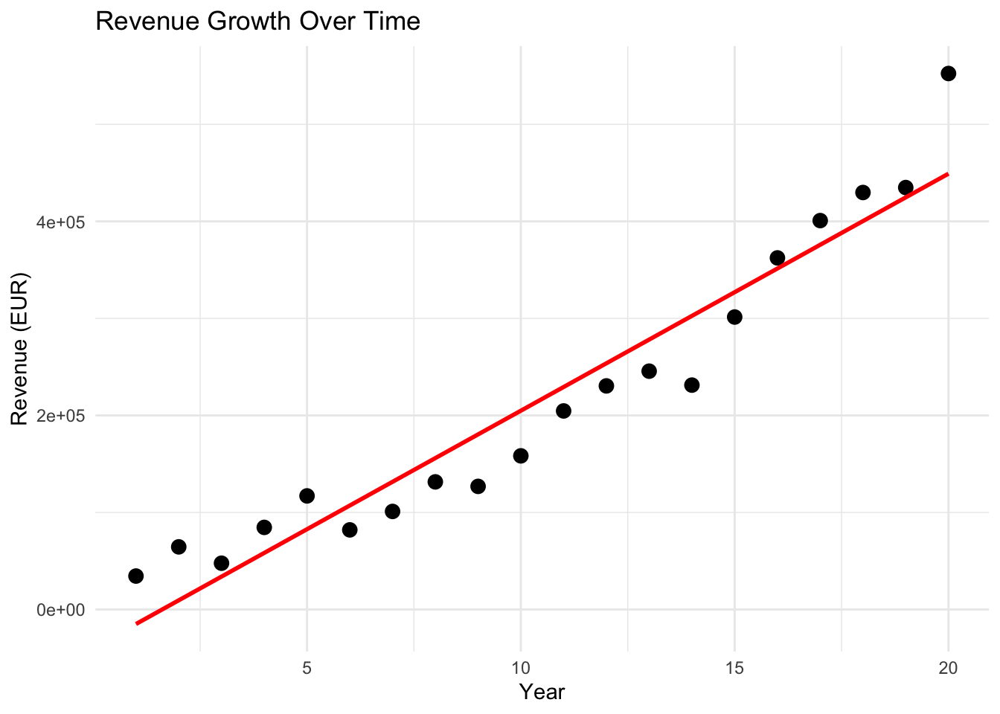
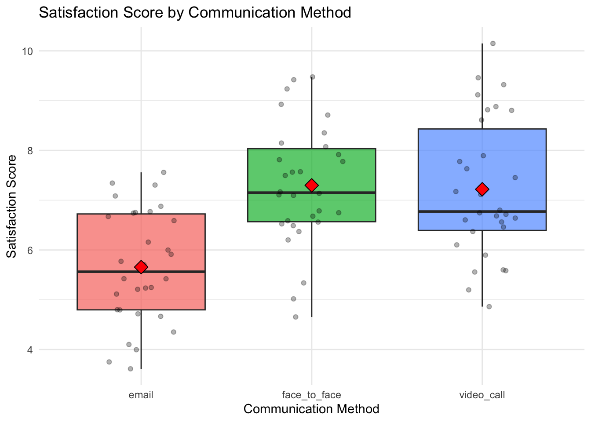

![]()
Code
# Load required packages
library(ggplot2)
library(dplyr)
library(broom)
library(effectsize)
library(car)Student Worksheet
# Load required packages
library(ggplot2)
library(dplyr)
library(broom)
library(effectsize)
library(car)# Load the datasets
marketing_data <- read.csv("marketing_data.csv")
firm_growth_data <- read.csv("firm_growth_data.csv")
leadership_study_between <- read.csv("leadership_study_between.csv")
communication_study <- read.csv("communication_study.csv")Research Question: How does ad spending affect sales revenue?
# Fit simple regression: sales_revenue ~ ad_spend; use marketing_data
model_simple <- lm(___ ~ ___, data = ___)
summary(model_simple)Error in parse(text = input): <text>:2:21: unexpected input
1: # Fit simple regression: sales_revenue ~ ad_spend; use marketing_data
2: model_simple <- lm(__
^Coefficient interpretation:
For every EUR 1 increase in ad spending, there is an associated sales revenue increases by approximately _______ EUR on average.
# Add website_traffic to the model
model_multiple <- lm(___ ~ ___ + ___, data = marketing_data)
summary(model_multiple)Error in parse(text = input): <text>:2:23: unexpected input
1: # Add website_traffic to the model
2: model_multiple <- lm(__
^# Extract coefficient for ad_spend from both models
coef_simple <- coef(model_simple)["ad_spend"]Error: object 'model_simple' not foundcoef_multiple <- coef(model_multiple)["ad_spend"]Error: object 'model_multiple' not foundcat("Simple model:", round(coef_simple, 3), "\n")Error: object 'coef_simple' not foundcat("Multiple model:", round(coef_multiple, 3), "\n")Error: object 'coef_multiple' not foundcat("Difference:", round(coef_simple - coef_multiple, 3), "\n")Error: object 'coef_simple' not foundNotes on omitted variable bias:
Space for your notes:
# Extract fitted values and residuals
fitted_values <- fitted(model_multiple)Error: object 'model_multiple' not foundresiduals_values <- residuals(model_multiple)Error: object 'model_multiple' not found# Create diagnostic plots
library(gridExtra)
Attaching package: 'gridExtra'The following object is masked from 'package:dplyr':
combine# Residuals vs Fitted
p1 <- ggplot(data.frame(fitted = fitted_values, resid = residuals_values),
aes(x = fitted, y = resid)) +
geom_point(alpha = 0.6) +
geom_hline(yintercept = 0, linetype = "dashed", color = "red") +
geom_smooth(se = FALSE, color = "blue") +
labs(title = "Residuals vs Fitted",
x = "Fitted Values",
y = "Residuals") +
theme_minimal()Error: object 'fitted_values' not found# Q-Q Plot
p2 <- ggplot(data.frame(resid = residuals_values), aes(sample = resid)) +
stat_qq() +
stat_qq_line(color = "red") +
labs(title = "Normal Q-Q Plot",
x = "Theoretical Quantiles",
y = "Sample Quantiles") +
theme_minimal()Error: object 'residuals_values' not foundgrid.arrange(p1, p2, ncol = 2)Error: object 'p1' not foundWhat to look for: - Residuals vs Fitted: _______________ - Q-Q Plot: _______________
Research Question: How has company revenue grown over time?
# Create scatter plot with linear fit
ggplot(firm_growth_data, aes(x = year, y = revenue)) +
geom_point(size = 3) +
geom_smooth(method = "lm", se = FALSE, color = "red") +
labs(title = "Revenue Growth Over Time",
x = "Year",
y = "Revenue (EUR)") +
theme_minimal()`geom_smooth()` using formula = 'y ~ x'
Observation:
Does the linear fit look appropriate?
# Create log-transformed variable
firm_growth_data <- firm_growth_data %>%
mutate(log_revenue = ____(revenue))
# Fit models
model_linear <- lm(revenue ~ year, data = firm_growth_data)
model_log <- lm(log_revenue ~ year, data = firm_growth_data)
# Compare R²
summary(model_linear)$r.squared
summary(model_log)$r.squaredError in parse(text = input): <text>:3:25: unexpected input
2: firm_growth_data <- firm_growth_data %>%
3: mutate(log_revenue = __
^# Plot log(revenue) vs year
ggplot(firm_growth_data, aes(x = year, y = log_revenue)) +
geom_point(size = 3) +
geom_smooth(method = "lm", se = FALSE, color = "blue") +
labs(title = "Log(Revenue) vs Year",
x = "Year",
y = "Log(Revenue)") +
theme_minimal()Error in `geom_point()`:
! Problem while computing aesthetics.
ℹ Error occurred in the 1st layer.
Caused by error:
! object 'log_revenue' not found# Get coefficient
coef_log <- coef(model_log)["year"]Error: object 'model_log' not foundpercentage_change <- (exp(coef_log) - 1) * 100Error: object 'coef_log' not foundcat("Annual growth rate:", round(percentage_change, 2), "%\n")Error: object 'percentage_change' not foundInterpretation:
When the dependent variable is log-transformed, coefficients represent _____________.
Research Question: Does leadership training improve team performance?
ggplot(leadership_study_between, aes(x = group, y = team_performance, fill = group)) +
geom_boxplot(alpha = 0.7) +
geom_jitter(width = 0.2, alpha = 0.5) +
stat_summary(fun = mean, geom = "point", shape = 23, size = 3, fill = "red") +
labs(title = "Team Performance by Group",
x = "Group",
y = "Team Performance Score") +
theme_minimal() +
theme(legend.position = "none")
# Normality test for each group: the Shapiro test
____(filter(leadership_study_between, group == "control")$team_performance)
____(filter(leadership_study_between, group == "training")$team_performance)
# Equal variances test: Levene test
____(team_performance ~ group, data = leadership_study_between)Error in parse(text = input): <text>:2:2: unexpected input
1: # Normality test for each group: the Shapiro test
2: __
^Interpretation: - p-values > 0.05? If yes, assumptions are met: _______
t_result <- t.test(
team_performance ~ group,
data = leadership_study_between,
var.equal = TRUE
)
print(t_result)
Two Sample t-test
data: team_performance by group
t = -3.7092, df = 58, p-value = 0.0004673
alternative hypothesis: true difference in means between group control and group training is not equal to 0
95 percent confidence interval:
-12.154597 -3.634084
sample estimates:
mean in group control mean in group training
75.92457 83.81891 Results: - Mean difference: _______ - p-value: _______ - Conclusion: _______
cohens_d_result <- ____(team_performance ~ group,
data = leadership_study_between)
print(cohens_d_result)Error in parse(text = input): <text>:1:21: unexpected input
1: cohens_d_result <- __
^Effect size interpretation: - Cohen’s d = _______ - This is a _______ effect (small/medium/large)
Research Question: Which communication method leads to highest satisfaction?
ggplot(communication_study, aes(x = communication_method,
y = satisfaction_score,
fill = communication_method)) +
geom_boxplot(alpha = 0.7) +
geom_jitter(width = 0.2, alpha = 0.3) +
stat_summary(fun = mean, geom = "point", shape = 23, size = 4, fill = "red") +
labs(title = "Satisfaction Score by Communication Method",
x = "Communication Method",
y = "Satisfaction Score") +
theme_minimal() +
theme(legend.position = "none")
# Using aov()
anova_model <- ____(satisfaction_score ~ communication_method,
data = communication_study)
summary(anova_model)Error in parse(text = input): <text>:2:17: unexpected input
1: # Using aov()
2: anova_model <- __
^Results: - F-statistic: _______ - p-value: _______ - Conclusion: _______
# Show that lm() gives same results
lm_model <- lm(satisfaction_score ~ communication_method,
data = communication_study)
anova(lm_model)Analysis of Variance Table
Response: satisfaction_score
Df Sum Sq Mean Sq F value Pr(>F)
communication_method 2 51.462 25.7312 16.374 9.212e-07 ***
Residuals 87 136.716 1.5714
---
Signif. codes: 0 '***' 0.001 '**' 0.01 '*' 0.05 '.' 0.1 ' ' 1# Look at coefficients
summary(lm_model)$coefficients Estimate Std. Error t value Pr(>|t|)
(Intercept) 5.656295 0.2288701 24.713991 4.231093e-41
communication_methodface_to_face 1.641875 0.3236713 5.072663 2.195718e-06
communication_methodvideo_call 1.563436 0.3236713 4.830320 5.797655e-06Notes: - Reference group: _______ - Coefficients show: _______
eta_sq <- eta_squared(anova_model)Error: object 'anova_model' not foundprint(eta_sq)Error: object 'eta_sq' not foundInterpretation:
Communication method explains _______ % of variance in satisfaction.
# Which groups differ?
tukey_result <- TukeyHSD(anova_model)Error: object 'anova_model' not foundprint(tukey_result)Error: object 'tukey_result' not foundSignificant differences: - _______ - _______
No significant difference: - _______
Variables: - design: Simple vs. Complex - time_on_site: Time spent (seconds) - previous_visits: Number of previous visits - converted: Purchase made (1 = yes, 0 = no)
exercise_data <- read.csv("exercise_data.csv")
head(exercise_data) user_id design previous_visits time_on_site conversion_prob converted
1 1 Simple 10 179.63774 0.5735567 1
2 2 Simple 10 121.67466 0.4296563 1
3 3 Simple 4 207.78119 0.5690097 1
4 4 Simple 8 81.54658 0.3133435 1
5 5 Simple 8 185.73159 0.5639764 1
6 6 Simple 5 164.35112 0.4734029 0# Create scatter plot of time_on_site vs converted# Fit: converted ~ time_on_siteInterpretation:
# Calculate R²# Compare time_on_site between designs# Calculate Cohen's dWhich design keeps users longer?
# Fit: converted ~ time_on_site + previous_visits# Extract and compare coefficients for time_on_siteIs there omitted variable bias? Why or why not?
Write down 3 key things you learned today:
Write down any questions or concepts you’d like to discuss further: